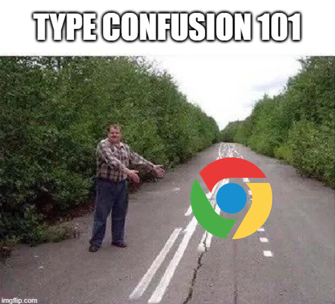

[Research] Starting Chrome Exploitation with Type Confusion 101 ^-^☆ Part 1.(EN)
Introduction
Hello, I’m OUYA77.
You might be surprised to suddenly see Chrome appear out of nowhere. Honestly, I was just as surprised myself.
I never expected to dive into Chrome, but I happened to watch a conference video by chance, and thought, “Wow, this is actually fun.” So without much thought, I started studying it. (Link)

I don’t have any grand ambitions like hunting for zero-days or making money through bug bounty programs. It’s really just that—I found it interesting and wanted to learn more. While digging into Chrome vulnerability research, I kept encountering the term Type Confusion. Naturally, I got curious: what exactly is Type Confusion?
I browsed through various blog posts online, but since I had zero background in JavaScript or web stuff, most of it went way over my head. Still, I pushed through and eventually realized, “Ah, this is how Type Confusion happens—and this is how it’s exploited.”
I started thinking about how I could make my learning process more productive and meaningful. Then I thought of this: If I could explain Type Confusion—a foundational concept in Chrome exploitation—in a way that’s approachable for beginners like myself, wouldn’t that be a meaningful contribution already?
So… here it is!!!!

Let’s take a look at what Type Confusion actually is, why it occurs in Chrome, and what we can do with it!
To be honest, I’ve already dropped a few spoilers about Type Confusion here and there—couldn’t help myself. 😅 In fact, I even wrote a short piece introducing Type Confusion in our hacking team’s newsletter:
https://maily.so/hackyboiz/posts/1gz2v4jxr3q
ㅋㅋㅋㅋㅋㅋㅋ^^
I’m planning for this “Type Confusion 101 in Chrome” series to be a four-part journey—but hey, life never goes as planned, and that’s what makes it fun, right? Let’s see how far we get together! 😄
Today, we’re starting with the basics.
You probably already know what Chrome is, but let’s briefly go over it—along with V8, the component where Type Confusion typically happens.

1. Overview of Chrome’s Architecture
1.1 Multi-process Architecture
When you double-click the Chrome icon, it may seem like you’re launching a single program—but in reality, Chrome is composed of multiple processes that communicate via IPC. (If you’re curious about IPC, check this out → [Research] Windows Named Pipe (EN) )

ref. https://developer.chrome.com/blog/inside-browser-part1
Let’s briefly explore the core processes involved.
- The Browser Process is responsible for the user interface (UI) of Chrome—what you see every day: tabs, address bar, bookmarks, and so on. It’s essentially the first thing you interact with when Chrome starts.
- The Renderer Process handles the actual rendering of web content. It interprets HTML, CSS, and JavaScript and transforms them into the visual web pages we see.
- The GPU Process takes care of graphics-related tasks, offloading work from the CPU for better performance.
- There are also other specialized processes like Utility, Network, and Extension Processes that handle things such as network communication or running Chrome extensions.
Together, these modular processes make up Chrome’s multi-process architecture—a system where each component runs independently but collaborates to form a cohesive user experience.
Why all this complexity? The main reasons are security and stability.
Each process is isolated from the others. So even if something crashes the whole browser doesn’t go down with it. For example, if a bug causes the Renderer Process to crash, the Browser Process can still display a message like “This page has become unresponsive” instead of crashing the entire application.

This concept of isolation is at the heart of Chrome’s sandboxing security model. (More on sandboxing in the next post!)
1.2 How Chrome Handles Front-End Resources

Chrome processes various front-end resources—such as HTML, CSS, and JavaScript files—to render web pages. Even during that brief moment when you open a new tab and load a website, the underlying multi-process system is already working hard behind the scenes.
It all starts when Chrome fetches the HTML document from the server and begins parsing it. As it encounters <link> and <script> tags, it then requests additional CSS and JavaScript files. Each resource plays a specific role:
- HTML defines the structural skeleton of the page.
- CSS adds styling—colors, layouts, fonts—to shape the page’s appearance.
- JavaScript brings the page to life, enabling dynamic behavior, user interaction, animations, and logic.
JavaScript is particularly interesting because it’s dynamically typed and can create or modify objects on the fly. While this makes web development incredibly flexible, it also adds complexity to how browsers execute and manage this code.

Enter the V8 JavaScript engine designed to process JavaScript quickly and efficiently. All of this happens inside the Renderer Process, a dedicated and isolated environment for executing front-end code.
Let’s dive deeper into what the Renderer Process actually does!
2. About Render Process
Everything involved in visually displaying and making a web page interactive happens inside the Renderer Process. Each tab in Chrome is handled by its own renderer, and within that process, the entire rendering pipeline takes place: HTML parsing, CSS application, DOM construction, JavaScript execution, layout calculation, painting, and compositing.

JavaScript is a very flexible language that allows types to change during execution and object structures to be modified dynamically. While this makes development powerful, it also introduces risks such as memory corruption and vulnerabilities like Type Confusion. To reduce these risks, Chrome isolates JavaScript execution inside separate Renderer Processes. Even if something goes wrong in one tab, only that specific process needs to be terminated, without affecting other tabs or the browser as a whole.
Let’s now take a look at how JavaScript is executed inside the renderer.
2.1 From Blink to V8
In Chrome’s rendering pipeline, the Blink engine is responsible for parsing HTML and rendering the visual structure of the page, while the V8 engine is responsible for executing JavaScript. These two engines work closely together to create a fully functional web experience.
Now, let’s take a look at how control flows from Blink to V8.
① When a <script> tag is encountered
While Blink is parsing HTML, if it comes across a <script> tag, it begins to stream the corresponding JavaScript file. The streamed JS code is passed to the V8 engine as a string. From this point on, V8 takes over the execution flow.

② Scanner: Converting the string into tokens
Inside V8, the first component to process the UTF-16 JavaScript string received from Blink is the scanner. The scanner breaks down the string into meaningful tokens based on JavaScript grammar. For example, function, if, =, 123, and 'hello' are all separate tokens. These tokens are then passed on to the parser.

③ Parser: Building the AST
The parser analyzes the tokens and constructs an Abstract Syntax Tree (AST) that represents the structure and semantics of the code. Since this involves compiler theory, we’ll skip the deep details for now.

④ Ignition: Converting to bytecode
The AST is handed off to Ignition, V8’s interpreter. Ignition walks through the AST and translates the JavaScript into bytecode, a lower-level representation optimized for fast execution within V8. This bytecode sits at a level of abstraction between source code and machine code.

⑤ Execution!
Finally, the generated bytecode is executed sequentially by the Ignition interpreter. At this stage, the JavaScript code we wrote actually runs—registering event listeners, modifying the DOM, animating elements, and more. While executing, V8 monitors code behavior. If certain functions are called frequently or specific code paths are executed often, V8 activates its optimizing compiler, TurboFan, to generate Just-In-Time (JIT) compiled native machine code. This results in a significant performance boost.
Now that we’ve seen the full JavaScript execution process, let’s take a deeper look into the internal structure of the V8 engine that powers it.
2.2 Introduction to the V8 Engine

.
The name “V8” was inspired by high-performance car engines. The Chrome team chose this name to reflect their hope that their JavaScript engine would be just as fast and powerful. And in reality, V8 is far more than a simple interpreter—it’s a complex and highly optimized execution engine that combines multiple tiers of performance techniques.
As mentioned earlier, JavaScript is a dynamically typed language, meaning the types of variables and object structures are not known until runtime. This provides great flexibility for developers, but it also presents serious challenges for performance and security in the engine. To address these, V8 adopts a multi-phase execution pipeline.
Initially, V8 used Crankshaft, a JIT compiler that compiled JavaScript straight to machine code without interpreting it first. However, this approach had limitations:
- Attempting to optimize all code resulted in high memory usage and slow startup times.
- Due to JavaScript’s dynamic nature, deoptimizations were frequent and costly.
- Supporting newer ECMAScript features was becoming increasingly difficult, making Crankshaft hard to maintain.
As a result, the V8 team designed a new compiler architecture: TurboFan.

TurboFan (since v5.9)
TurboFan replaced Crankshaft as V8’s new optimizing compiler. It was built with the following goals:
- Full support for the modern JavaScript language spec
- A robust optimization pipeline centered on intermediate representations (IR)
- High portability and scalability across various platforms and architectures
While TurboFan delivered powerful optimizations, it still had a drawback—it took time to kick in. For short-lived scripts that run briefly (which is common on the web), the benefits often didn’t justify the cost.
SparkPlug (introduced in 2021)
To bridge this gap, the V8 team introduced SparkPlug, a lightweight JIT compiler designed for quick compilation. SparkPlug aimed to:
- Compile from bytecode that had already been parsed and interpreted
- Skip deep type analysis and complex optimizations in favor of speed
- Generate machine code faster than TurboFan, albeit less optimized
SparkPlug offered a significant boost during the early execution stages—particularly helpful for page loading and initial user interactions.
Maglev (2022 and onward)
While SparkPlug worked well, its optimizations were still limited. The V8 team wanted something faster than TurboFan and smarter than SparkPlug, especially for resource-constrained environments like mobile. Enter Maglev.
Maglev was designed to:
- Generate register-based machine code more aggressively than SparkPlug
- Incorporate lightweight type feedback to improve performance
- Match SparkPlug’s compile speed while approaching TurboFan-level performance at runtime
Maglev is especially useful for devices with limited resources and helps strike a balance between speed and optimization.
Today, V8 uses a tiered execution model that progresses through multiple stages based on code “hotness”:
Ignition → Maglev → TurboFan. This dynamic system allows V8 to adjust the level of optimization depending on how frequently the code is executed.
2.3 The V8 Execution Pipeline
Based on what we’ve discussed so far, let’s summarize how V8’s execution pipeline works.

At the heart of V8’s pipeline is the Ignition interpreter. It converts JavaScript source code into bytecode and begins executing it sequentially while collecting runtime feedback. Ignition was designed for fast startup and low memory consumption, and replaced the older Full-codegen system in Chrome v5.9. However, interpreters alone can’t offer high performance, so once certain parts of the code become “hot” (frequently executed), they are promoted to the next stage for Just-In-Time (JIT) compilation.
That’s where SparkPlug comes in. SparkPlug compiles bytecode into native machine code quickly, without performing deep type analysis or applying complex optimizations. This makes it ideal for scenarios where fast, lightweight performance is required, such as during page loading or initial user interactions. It’s efficient in both speed and resource usage, acting as a smart middle ground between interpretation and full optimization.
When higher performance is needed, V8 turns to its full optimizing compiler, TurboFan. TurboFan uses the type feedback, call patterns, and loop structures collected during earlier execution to apply advanced optimizations—such as inlining, loop unrolling, and type specialization. The result is highly optimized native code that performs similarly to code in statically typed languages. Since optimized code is cached, subsequent calls execute very quickly, making TurboFan particularly effective for hot, long-running code paths.
However, TurboFan comes with a cost. Compilation can be expensive, and failed optimizations (deopts) can hurt performance. To bridge the gap between SparkPlug and TurboFan, V8 introduced Maglev.
Maglev is a mid-tier JIT compiler designed to balance optimization quality and compilation speed. It generates more efficient register-based machine code than SparkPlug and incorporates some degree of type feedback, but without the heavy compilation cost of TurboFan. Introduced gradually starting in 2022, Maglev performs particularly well on resource-constrained environments like mobile devices and provides a flexible middle layer that adapts to various runtime scenarios.

To summarize, V8 doesn’t rely on a single compiler strategy. Instead, it uses a tiered execution pipeline that dynamically escalates optimization based on how frequently code is executed. This means it doesn’t waste resources upfront, but rather invests incrementally to achieve better performance over time.
Thanks to this layered approach, V8 can successfully balance fast startup, low memory usage, and high execution performance—all at once.

However, this sophisticated execution pipeline also introduces potential security vulnerabilities. Most of V8’s optimizations rely on assumptions such as:
“This object will continue to have the same structure,” or “This function will always be called in the same way.”
But when these assumptions are broken, V8 ends up performing memory access or object interpretation based on incorrect premises, and this is where one of the most common vulnerabilities, Type Confusion, can occur.
Type Confusion, as the name suggests, happens when the engine makes incorrect inferences about the type of an object or value. It may also occur when the type changes, but the engine continues to treat it as if it hasn’t. For example, suppose an object starts off as a simple array of integers. If, during runtime, it becomes an array of complex objects but V8 still assumes it’s just an integer array and runs optimized code based on that assumption, it could result in invalid memory access or corruption of internal structures.
These issues tend to happen more often during advanced optimizations performed by TurboFan or Maglev. Techniques like type specialization, function inlining, and hidden class assumptions can lock in certain behaviors to boost performance. However, if the code path changes or an object’s structure is altered afterward, these optimizations can become dangerous. For instance, an attacker might repeatedly call a function in a consistent way to convince the engine it’s safe to optimize. Then, at a specific moment, they intentionally alter the object’s type or structure, which triggers unexpected behavior in the native code that V8 already compiled. This technique has been used in several real-world Chrome exploits, and Type Confusion vulnerabilities in V8 are still considered high-risk attack vectors today.
Now that we’ve walked through how JavaScript runs inside V8, the next step is to look deeper into how the engine represents and optimizes objects internally, and how this design can lead to security issues like Type Confusion.
Let’s take a breath here.
I’ll be back with Part 2 of the series. See you soon!
- UP Next: Part2)

Reference
v Conference Video
v V8 Engine
- https://v8.dev/
- https://en.wikipedia.org/wiki/V8_(JavaScript_engine)
- https://evan-moon.github.io/2019/06/28/v8-analysis/
- https://blog.bitsrc.io/secret-behind-javascript-performance-v8-hidden-classes-ba4d0ebfb89d
- https://medium.com/@yanguly/sparkplug-v8-baseline-javascript-compiler-758a7bc96e84
- https://pks2974.medium.com/v8-%EC%97%90%EC%84%9C-javascript-%EC%BD%94%EB%93%9C%EB%A5%BC-%EC%8B%A4%ED%96%89%ED%95%98%EB%8A%94-%EB%B0%A9%EB%B2%95-%EC%A0%95%EB%A6%AC%ED%95%B4%EB%B3%B4%EA%B8%B0-25837f61f551

본 글은 CC BY-SA 4.0 라이선스로 배포됩니다. 공유 또는 변경 시 반드시 출처를 남겨주시기 바랍니다.